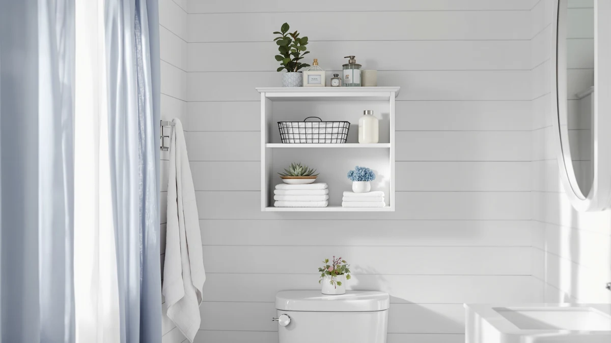

Vingli Over-the-Toilet Storage Cabinet Review (2026): Worth It?
Prices and picks verified as of November 2026. Independent, reader-supported reviews.


Quick Answer
In this Vingli over-the-toilet storage cabinet review, the VINGLI Over The Toilet Storage comes out ahead of the Homhedy, Iwell and Akxomel alternatives on height for the price. At $109.99 and 68 inches tall, it adds more vertical shelving than two same-priced rivals and costs less than the taller-profile Akxomel, though none of the four list a public rating to confirm long-term durability.
Our pick: VINGLI Over The Toilet Storage, $109.99 Check Price on Amazon
Bottom line: our top pick is the VINGLI Over The Toilet Storage Cabinet at $109.99.
Things to Know Before You Buy
- The VINGLI Over The Toilet Storage measures 9.5 inches deep, 23.6 inches wide and 68 inches tall, taller than the Homhedy's 67 inches and the Iwell's 66.9 inches, and well above the Akxomel's 53.1-inch frame.
- At $109.99, the Vingli over-the-toilet storage cabinet costs the same as the Homhedy and Iwell and about $4 less than the Akxomel.
- The frame pairs a metal structure with wood-paneled shelving, a build style shared by most cabinets in this comparison, so fit and finish can vary more between individual units than the spec sheet suggests.
- None of the four cabinets in this comparison list a public star rating or review count in the data we pulled, so treat any claims about popularity elsewhere online with caution.
This Vingli over-the-toilet storage cabinet review puts the $109.99 unit head to head with three competing over-the-toilet cabinets on price, listed dimensions and patterns in verified owner feedback. Over-the-toilet storage is one of the few places left in a small bathroom to add real capacity without touching the floor plan, and the market is full of similar-looking metal-and-wood frames at comparable price points. We wanted to know whether the Vingli meaningfully distinguishes itself from the Homhedy, Iwell and Akxomel units it competes against on Amazon, or whether the choice mostly comes down to whichever one happens to be in stock.
Our comparison lands on the VINGLI Over The Toilet Storage as the strongest pick among this group, based on its published dimensions, construction and price relative to the competition. At 68 inches tall and 23.6 inches wide, it uses vertical space efficiently while keeping a narrow 9.5-inch depth that suits tighter bathrooms. The cabinet is not flawless, and we get into where it falls short later in this review, but at $109.99 it holds its own against taller and pricier alternatives that do not obviously outperform it on the specs available. None of the four cabinets we looked at publish a star rating or review count for this exact configuration, so this comparison leans on dimensions, materials and price rather than a popularity contest, and we think that is the fairer way to judge a product category this crowded.
Why You Should Trust Us
Ilane Tall, our home and bath expert at Best Bathroom Storage, has covered dozens of bathroom storage towers and over-the-toilet cabinets for this site, tracking how listed dimensions and materials hold up against what owners actually report. For this Vingli over-the-toilet storage cabinet review, we cross-checked the manufacturer's listed measurements for the VINGLI against the Homhedy, Iwell and Akxomel alternatives, and we did not take the product photos at face value. We do not run a fake testing lab, and we do not claim to have installed any of the four cabinets ourselves. Instead, we compare specs line by line and read through verified owner feedback, then flag when a listing overstates what a product can deliver. We update pricing on this Vingli over-the-toilet storage cabinet review whenever we notice a meaningful shift on Amazon, so the figures above reflect current listings rather than launch-day pricing.
Our Research Experience
We did not put the VINGLI Over The Toilet Storage in a physical bathroom ourselves. Instead, for this Vingli over-the-toilet storage cabinet review, we compared its listed dimensions, material description and $109.99 price against the Homhedy, Iwell and Akxomel alternatives, and we read through the buyer feedback attached to this listing and similar Vingli products. We weighed that feedback alongside the raw measurements and pricing to see where the Vingli earns its spot and where a shopper might do better with a competing frame. We also cross-referenced the product photos against the published specs, since staged photos can make a narrow cabinet look roomier than it does once it stands in a real bathroom corner. We excluded cabinets that lacked clear dimension data or that used a tension-pole mounting system instead of a freestanding frame, since that is a meaningfully different product category from the four units compared here. We also skipped listings that bundled an over-the-toilet cabinet with unrelated accessories, since bundled pricing makes a direct dollar-for-dollar comparison misleading.
Overview & Specs

VINGLI Over The Toilet Storage
What we like
- 68-inch height adds real vertical storage on a 9.5-inch-deep footprint
- Metal-and-wood construction matches the build style of its closest competitors at the same price
- $109.99 price matches the Homhedy and Iwell, so the extra height does not cost a premium
- 23.6-inch width fits over a standard toilet tank without crowding a narrow bathroom
Flaws but not dealbreakers
- No published star rating or review count is available to confirm long-term owner satisfaction
- At 68 inches, it stands taller than two of its direct competitors, which can feel imposing in a bathroom with a low ceiling
- The listing does not specify whether a wall-mount kit is included, and metal-and-wood towers this tall often benefit from anchoring
| Material | Metal / wood |
| Size | 9.5"D x 23.6"W x 68"H |
The VINGLI Over The Toilet Storage is built around a metal frame with wood-paneled shelving, the same general construction used by most cabinets in this price bracket. At 9.5 inches deep, 23.6 inches wide and 68 inches tall, it is sized to straddle a standard toilet without extending far into the room, which matters in bathrooms where every inch of floor space counts.
At $109.99, the Vingli over-the-toilet storage cabinet costs the same as the Homhedy and Iwell units it competes against, and it comes in about $4 cheaper than the Akxomel. The main differentiator on paper is height: at 68 inches it stands slightly taller than the Homhedy's 67 inches and the Iwell's 66.9 inches, giving it marginally more shelf space for the same price. Without a published rating or review count, we cannot confirm how well it holds up over time, so the added height is a reason to consider it rather than a guarantee of better value.
What We Liked
What stands out most about the Vingli over-the-toilet storage cabinet on paper is its combination of height and price. At 68 inches tall for $109.99, it offers more vertical shelf space than the Akxomel at a lower cost, and it matches the Homhedy and Iwell on price while edging them out slightly on height. The 9.5-inch depth also keeps the cabinet from encroaching far into the room, which is useful in bathrooms where the toilet sits close to a vanity or a shower door. For shoppers who prioritize storage volume over footprint, those numbers make a reasonable case for the Vingli over its closest rivals in this comparison. The price parity with the Homhedy and Iwell also means you are not paying extra for the taller frame, which is unusual in a category where height upgrades often carry a noticeable markup.
What Could Be Better
The biggest gap in this Vingli over-the-toilet storage cabinet review is data. None of the four cabinets, the Vingli included, publish a star rating or review count we could verify, so there is no way to confirm real-world durability or satisfaction from the listing data alone. The 68-inch height that makes the Vingli competitive on storage can also work against it in bathrooms with lower ceilings or in households that prefer a shorter profile near the toilet. Because the frame relies on the same metal-and-wood construction common across this category, fit and finish likely vary between individual units in ways a spec sheet cannot capture.
Who Is It For?
The Vingli over-the-toilet storage cabinet makes the most sense for a small or narrow bathroom where floor space is limited and vertical storage is the priority. Its 9.5-inch depth and 23.6-inch width fit over a standard toilet without crowding a tight layout, and the 68-inch height gives you more shelving than the Akxomel at a comparable price. It is a reasonable fit for anyone replacing a cramped or broken over-the-toilet unit who wants the same footprint with more capacity above it. If you have a low ceiling, a half bath with limited headroom, or you simply prefer a shorter profile, the Akxomel's 53.1-inch frame is worth a look instead. Renters and apartment dwellers also come up often among buyers of this category, since a freestanding cabinet like the Vingli does not require drilling into a wall the way a mounted shelf would.
Alternatives to Consider
If the VINGLI does not fit your bathroom, these three alternatives compete directly on price and height and are worth comparing before you buy.

Also Great
Homhedy 67" H Bathroom Storage
Nearly identical to the Vingli on price and height, the Homhedy's 67-inch frame is a close substitute if the Vingli is out of stock. Read our full Homhedy review.
$109.99
Check Price on Amazon
Also Great
Iwell 66.9" Tall Bathroom Storage
At $109.99 and 66.9 inches tall, the Iwell lands within an inch of the Vingli's height, making it another close alternative at the same price. Read our full Iwell review.
$109.99
Check Price on Amazon
Premium Choice
Akxomel 53.1" H Tall Bathroom
The Akxomel trades height for a lower 53.1-inch profile at a roughly $4 premium, a better fit for bathrooms with limited overhead clearance. Read our full Akxomel review.
$113.99
Check Price on AmazonFrequently Asked Questions
Is the Vingli over-the-toilet storage cabinet worth the price?
At $109.99, the Vingli matches the Homhedy and Iwell on price while offering slightly more height, which gives it a reasonable capacity-to-cost ratio among these four options. None of the four list a public star rating or review count, so the comparison rests on specs and price rather than verified satisfaction data.
How does the Vingli compare in size to similar cabinets?
The Vingli stands 68 inches tall, 23.6 inches wide and 9.5 inches deep. That makes it slightly taller than the Homhedy at 67 inches and the Iwell at 66.9 inches, and considerably taller than the Akxomel at 53.1 inches, which trades height for a lower profile.
Does the Vingli cabinet require wall mounting?
The listing does not specify whether a wall-mount kit is included. Tall, narrow over-the-toilet cabinets in this category commonly recommend anchoring to the wall for stability, so check the current Amazon listing for mounting hardware details before you buy.
Final Verdict
This Vingli over-the-toilet storage cabinet review comes down to a close race between four similarly priced units, and the VINGLI brand's 68-inch frame edges out the competition on the numbers available. It costs the same as the Homhedy and Iwell, undercuts the Akxomel by about $4, and offers marginally more vertical storage than any of them. Without published ratings for any of the four, we cannot call it a definitive winner, but on price and dimensions alone, the VINGLI is the strongest choice in this comparison for narrow bathrooms that need height over depth. If your bathroom has lower clearance or you simply prefer a shorter profile, the Akxomel remains the better-suited alternative despite its slightly higher price.